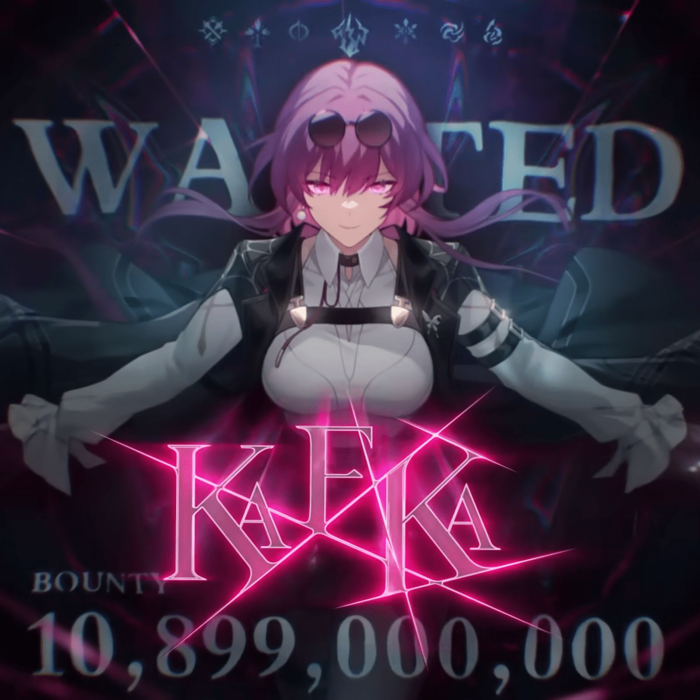

Um membro dos Stellaron Hunters que é calmo, controlado e bonito. Seu registro na lista de procurados da Corporação Interastral da Paz lista apenas seu nome e seu hobby, gosta de colecionar casacos. As pessoas sempre a imaginaram elegante, respeitável e em busca de coisas bonitas, mesmo em combate. Kafka possui uma recompensa de10.899.000.000de créditos
Caracteristicas
- Altura: ≈ 1,70 metros
- Cabelo: Ruivo cor de vinho, geralmente amarrado por um rabo de cavalo bagunçadocom duas franjas soltas e penduradaas em cada lado do rosto
- Olhos: seus olhos são de uma cor semelhante mais clara
- Naturalidade: Nova Babilônia, Peteruges-V
- Roupa: Ela usa óculos pinncê no topo da cabeça junto com um brinco de pérola,um casaco preto que geralmente fica pendurado em seus ombros, uma camisa branca por baixo, uma meia calça de nailôn, botas e um short preto, juntamente com uma liga na coxa direita, também ultiliza luvas da cor vinho, uma de suas botas é maior que a outra, uma vai até o joelho direito, enquanto a outra vai até seu tornozelo esquerdo , seu casaco tem um padrão de aranhas e teias atrás.
- Facção: Stellaron Hunters, um dos menbros centrais e subordinado mais confiavel de Elio
Habilidades
Recomendações
Este é um individuo extremamente perigoso e àgil, para sua segurança não tente bancar o herói, afaste-se do local,enconda-se e chame as autoridades competêntes você pode fazer isso anônimamente sem se identificar pelo número 112 ou pelo portal de denûncia da C.P.I
Relacionados
Blade